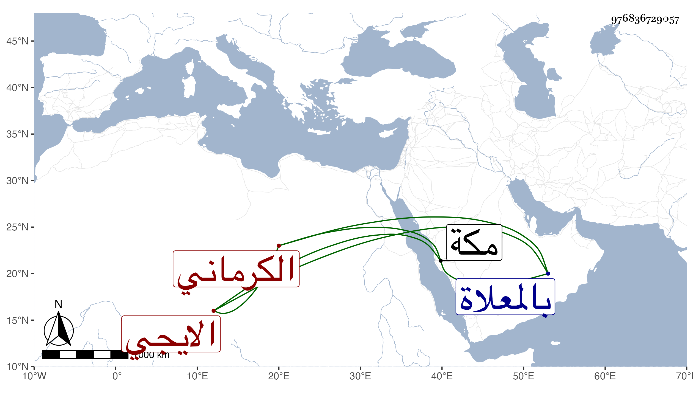

0902Sakhawi.DawLamic.ITO20230111-ara1.EIS1600.976836729057
Biography ID: 976836729057
153
خديجة ابنة خليل بن نعمة الله الايجي الكرماني الماضي جدها . تزوجها السيد أحمد بن الصفي الايجي ؛ وماتت تحته بمكة في سنة أربع وسبعين بعد أن استولدها ، ودفنت بالمعلاة وبنوا على ضريحها قبة ودام القراء ينتابون قبرها سنة فأكثر ثم صاروا في كل شهر ، وكانت كثيرة المعروف والبر تأسف عليها خلق رحمها الله .
